医院动态
Dynamic hospital
- 门诊时间
- 门诊专家
- 病例查询
- 预约挂号
 挂号须知
挂号须知
- 专科医院值得信赖
- 网上预约专家门诊好处
- 中山专家门诊需知
-
①南宁中山医院是一所集临床、教学、 科研、预防、保健、康复为一体的现代化专科医院。所有医护人员执业许可证全部注册在医院,持证上岗。
②响应国家医改精神,贯彻利民惠民政策,坚持平价收费标准，各事业单位职工、城乡居民已参保的,都可在我院享受相关的报销政策。
③所有的收费项目严格执行物价局核准价,并上榜公示,接受社会监督。所有医护人员遵守廉政规定,不接受红包。
-
①为缓解就诊压力，不用排队挂号，为您节省时间；
②不会遭遇实习生治疗，消除您对治疗效果的担心；
③一定是专家亲诊，并且有足够面诊时间，充分沟通并了解治疗方案；
④患者可以通过在线沟通的方式，"即时咨询，在线解惑，网上预约"；
-
①为患者就诊提供最大方便，实行"无假日门诊"，专家轮流坐诊。
②只能通过本站网络预约或电话预约中山专家门诊；
③专家每日仅看诊35人，请您如约就诊，以免影响他人就诊；
医院概况
Hospital survey
- 疗效显著
中医辨正治内、西医辨症治外、10位专家亲诊、50项独创疗法、10大金牌专科门诊，全方位确保疗效。不但以治好每一位患者为宗旨，更注重和谐的医患关系建设工作，多年来236317例康复病例，真实有效的验证了我院在皮肤病方面诊疗实力。
- 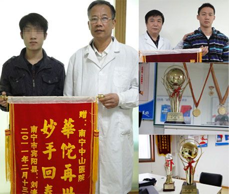
- 专家团队
疗效好不好，医院环境是基础、设备仪器是保障、专家团队是核心，我院一直秉承方针、在专家团队建设工作上不遗余力，开拓进取，多年来培养出了一支各方面都保持优秀的专家团队，并采用交叉式管理，不定期学术交流。确保每一位专家都能展现出自己最强的诊疗水平。
- 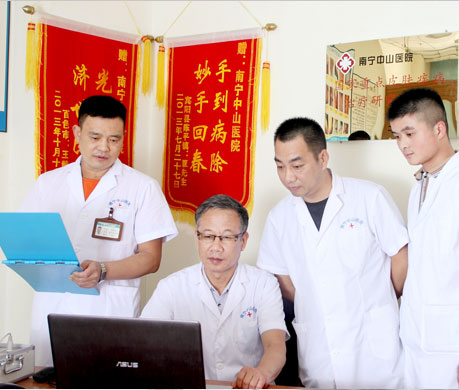
- 科学分诊 快速就医
南宁中山医院积极贯彻卫生部《在网上施行预约诊疗服务工作的意见》，率先推出网上预约挂号服务，并将其放大、完善，独立研发了一套优秀的就诊流程系统。从预约、挂号到到诊全程提前科学分配。确保每一位预约的患者能快以最快的速度得到就诊。
- 收费规范
南宁中山医院皮肤科各项收费认真贯彻国家物价管理部门和医保政策规定，严格执行广西省物价局收费标准，建立了完善的监察、督察制度，规范诊疗制度严格根据病情开药、制定治疗方案，坚决杜绝过量治疗过量开药。于医院直接设立价格公示牌，真正做到让患者明明白白看病、清清楚楚花钱。
- 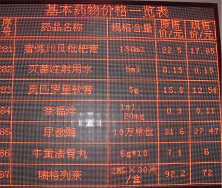
- 服务理念
南宁中山医院为营造一个和谐良好的诊疗氛围、提高我院医患关系，特别设立了一个单独的行政部门，随时接受患者建议，患者的投诉。并长期为医患关系的再进步而不断的举行培训，随时对不足之处进行批评改进。因为我们坚信：良好的医患关系才能让诊疗工作一切顺利。
- 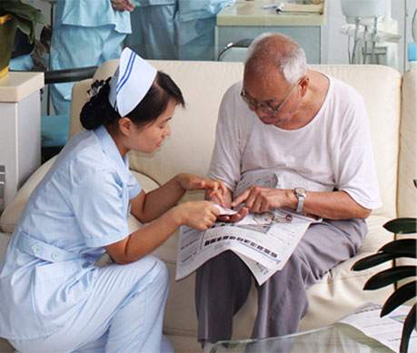
- 医疗设备
作为疗效的强有力保障，医院对先进诊疗设备的采购，临床应用培训，一直都是医院的重点工作。不惜重金引进中国国内外先进诊疗仪器，不让一个治疗效果因为没有相应的仪器而打上折扣。并将中西与西医设备的优势结合，形成了一套独树一帜的诊疗手段。
- 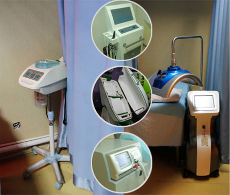
- 医院概况
南宁中山医院皮肤科拥有国内外尖端的医疗设备、技术及管理模式，秉承以患者为中心的服务理念，本着对患者的责任、关心，根据国际医学界先进的"生理－心理－社会"医学模式"构建的具有专科特色、个性化服务的现代化医院，是一家医疗、教研、预防、保健、咨询为一体的现代化医疗服务机构。
- 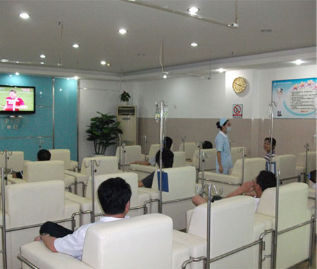
-
疗效显著
Good effect
-
专家团队
Team of experts
-
快速就医
Quick Treatment
-
收费规范
specification
-
服务理念
Service concept
-
医疗设备
Equipment
-
医院概况
Introduction
专家团队
A team of experts
-
★南宁中山医院皮肤科学术带头人
★中国皮肤病科研成果一等奖获得者
★中国皮肤研究院理事
★中华医学会皮肤性病学会委员
-
★中国皮肤病医学会会员
★从事皮肤临床研究与治疗工作二十余年
★擅长病种：牛皮癣、鱼鳞病、荨麻疹、湿疹、痤疮...
-
★从事皮肤科临床诊治工作三十余年
★擅长病种：皮肤瘙痒、湿疹、荨麻疹、扁平疣...
★发表学术论文五十余篇
-
★从事于皮肤疾病临床工作近二十年
★擅长病种：牛皮癣、鱼鳞病、皮肤癣、疥疮...
★发表学术论文三十余篇
-
★毕业于湖北武汉大学医学院
★从事于皮肤疾病临床医疗工作十余年
★擅长病种：痤疮、脱发、灰指甲、扁平疣、疤痕...
-

★中华中西医结合学会会员
★从事于皮肤美容医疗工作二十余年
★擅长病种：青春痘、黄褐斑/雀斑、毛囊炎、酒糟鼻...
-
★从事皮肤科临床、教学工作十余年
★擅长病种：脱发、痤疮、色斑、疤痕...
★擅用中西医结合方法治疗皮肤病
-
★从事皮肤科临床诊治工作十余年
★擅长病种：灰指甲、湿疹、皮炎、荨麻疹、色斑...
★真菌色素类皮肤病诊疗权威专家
最新技术
The latest technology
- 中医排毒养颜综合疗法 祛痘平疮 光滑皮肤
治疗原理：南宁中山皮肤病医院,采用针清技术、中药倒膜、中药内调、光疗修复等有效手段,有效增强肌肤胶原细胞的活性,杀掉引起青春痘的痤疮杆菌，阻绝因细菌感染造成的局部化脓、红肿发炎等问题,激活细胞内线粒体活性,细胞生产过程循环,刺激纤维细胞原产生胶原蛋白,修复瑕疵皮...【详细】
- 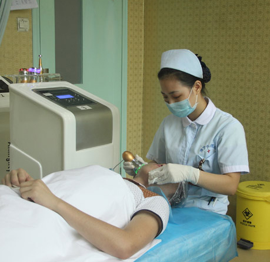
- 黑色素细胞种植疗法 拔出病根 抗复发队
治疗原理：南宁中山医院皮肤病专家科研团队，自主创立了"无疤痕自体表皮黑色素细胞种植"疗法，不同于普通的"移植法"，这一"种植法 "技术上更为先进...【详细】
- 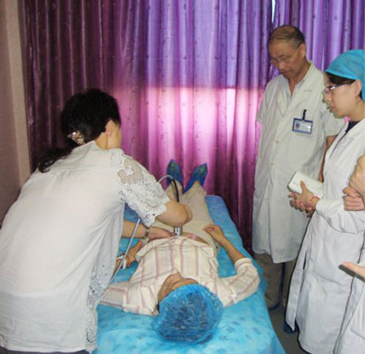
- 中医活化疗法 非激素治疗 促进皮肤再生
治疗原理：在攻克皮肤病世界难题--银屑病（牛皮癣）上，试验出13种天然中草药的配方，最后研发"DFMZ308―牛皮癣中医活化疗法"，在2002年全国科技大会上获"国家科技成果二等奖"。获得了很多患者的一致认可与称赞...【详细】
- 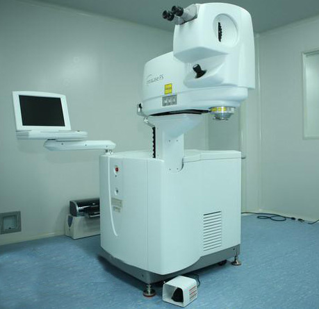
- 清热去脂综合疗法 去油止脱 快速生发 永不脱落
治疗原理：南宁中山医院皮肤科专家及脱发科研团队，自主创立了"清热去脂综合疗法"，按中医学"清热去脂"原理，采用内服中药、外部气疗加纳米波此技术对头皮创伤小，恢复快，无需住院...【详细】。
- 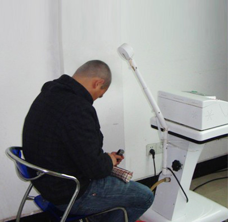
- 中西医综合疗法 安全快速无副作用 不复发
治疗原理：南宁中山医院针对湿疹迁延难愈、易复发的特点，根据"治其外必治其内，治其内必治其根"的原则，从改善肌肤微循环入手，自主研发出"中西医综合疗法"，内清脏毒、外疗肌肤，使药效直接作用于脏腑与血液中，激活皮肤细胞的活性，促进细胞再生...【详细】
- 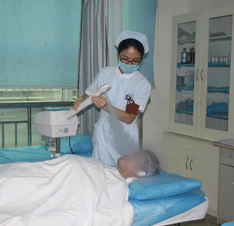
- 中药熏蒸疗法 快速 高效 一次治愈
治疗原理：南宁中山医院皮肤科从荨麻疹病因、病程长，易复发等特点入手，自主创立了"中药熏蒸疗法"治荨麻疹，用中药熏蒸机对于皮肤熏蒸，改善气血循环，增强体质，提高自生的营养吸收，从而达到排毒，清理肌肤毒素。再使用中药进行调理，进而改善体质，调节免疫力的恢复...【详细】
- 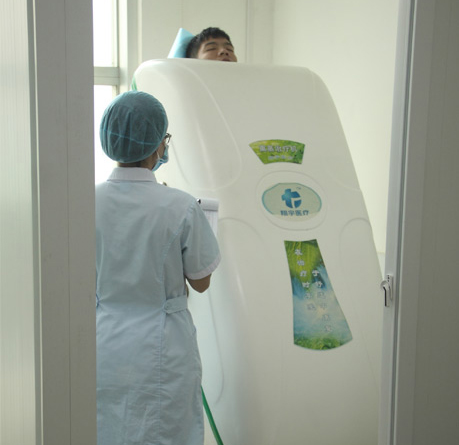
- 二联护甲疗法 不拔甲 全程安全无痛
治疗原理："二联护甲疗法"治疗指甲增厚:"二联护甲疗法"将药物通过层层甲板的屏障,到达甲床根部破坏并清除甲板下大量的角质物...【详细】
- 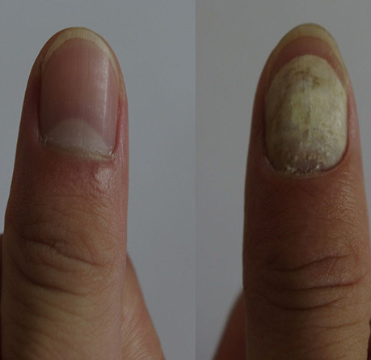
- 激活免疫疗法 益气活血化瘀 化毒润肤生肌
治疗原理：南宁中山医院皮肤科专家团队秉承严谨求实的科学态度和诚信求精的行医宗旨,依靠资深专家多年丰富的临床经验 ...【详细】
- 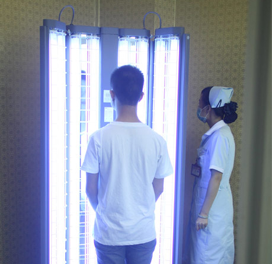
-
青春痘治疗中心
Acne treatment
-
白癜风治疗中心
Vitiligo Treatment
-
牛皮癣治疗中心
Psoriasis Treatment
-
脱发治疗中心
Hair Loss Treatment
-
湿疹治疗中心
Eczema Treatment
-
荨麻疹治疗中心
Urticaria Treatment
-
灰指甲治疗中心
Onychomycosis
-
鱼鳞病治疗中心
Ichthyosis treatment
典型病例
Typical case
- 青春痘
- 脱 发
- 灰指甲
- 白癜风
- 皮 炎
- 湿 疹
- 荨麻疹
- 鱼鳞病
-
-
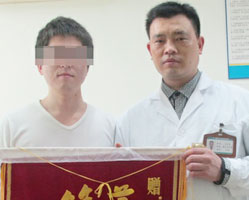
小许痤疮痘印4年
钦州患者
-
患者小许,钦州人,现在南宁工作,多年来患痤疮,面肤粗糙,摸上去凸凹不平,自嘲像"桔子皮"."面子"问题让正值青春年华的小许费尽心机,跑了不少医院,可无论.......
【详细】
-
翁先生痤疮3年
南宁患者
-
翁先生是南宁一家公司公司基层员工,由于是青春期,加之工作压力大,脸上发了痤疮.为此,翁先生曾在南宁一些医院治疗,三年下来不但效果不佳,还由于治疗不当而愈发严重.......
【详细】
-
孔小姐痤疮
桂林患者
-
孔小姐 1年病史，1年前额头开始长痘痘的时候并没有当回事，等着它自己好，结果最终恶化成了丘疹型痘痘，犹豫经常手挤并且留着齐刘海，额头痘痘有增无减,.......
【详细】
-
-
钱先生脂溢性脱发
南宁患者
-
秋冬季节到了,脱发的发病率也增高了.脱发到底能不能治好?很多人都是持怀疑态度的.家住广西防城港的钱先生也不例外.他今年36岁,头发掉的很厉害,用.......
【详细】
-
徐先生脱发5年
南宁患者
-
徐先生，男，工作后几年开始出现脱发。来到中山医院治疗后，中山医院的专家先给徐先生用专业的毛囊检测仪进行免费检测，同时权威专家杨主任结合.......
【详细】
-
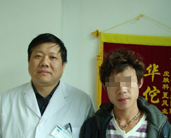
小何脱发2年
南宁患者
-
小何，二十岁，南宁市某重点高三学生。由于学业负担重，精神压力大，近几年来头发脱落很严重。小何是个追求完美的优秀青年，脱发对于他的学业和生活不谛是个.......
【详细】
-
-
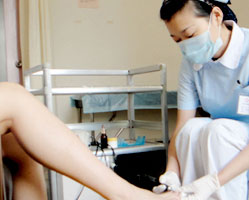
黄女士灰指甲2年
南宁患者
-
每个女人的鞋柜里都会有几双高跟鞋,殊不知久穿高跟鞋会引起甲真菌感染,患上灰指甲.有研究者对138名穿高跟鞋女性进行调查发现,女性穿高跟随与甲真菌病的发病有-定影.......
【详细】
-
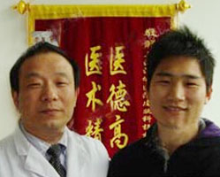
刘灰指甲1年
南宁患者
-
小刘患灰指甲有一年时间,这种病对爱美的他影响很大,特别是夏天他都不敢穿凉鞋到办公室.这几年,他到处求医,用了不少药,花了不少钱,却始终没能治好.2010年3月,他听说.......
【详细】
-
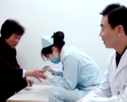
吴阿姨灰指甲3年
南宁患者
-
南宁本地的吴阿姨,一年前得了灰指甲,她遭遇的鲜血淋漓的拔甲手术,让她至今仍记忆犹新.2011年3月20日,吴阿姨回忆起了自己治疗灰指甲的经历:"我是去年发的,本来还.......
【详细】
-
-
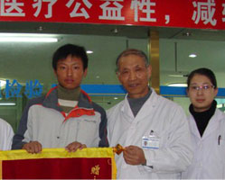
小吴白癜风2年
南宁患者
-
南宁一小伙患有白癜风二年多,开始是面积不大,又不影响吃喝,所以他本人并不太在意.但后来不断扩展,已经使他的外在形象和生活质量受到影响.很幸运的是,当他决定求医治.......
【详细】
-
阿桃白癜风十几年
安徽患者
-
2012年4月29日上午,一对父女带着写有这八个字的锦旗从安徽合肥踏上火车,专程赶到南宁中山医院皮肤科送给张富珍主任.这对父女是安徽寿县人,女儿叫阿桃(化名),八九.......
【详细】
-
角田先生白癜风十年
日本患者
-
角田先生,是一名日本人,47岁,在南宁某公司工作.2011年1月8日,在南宁中山医院皮肤科杨主任的诊室,提起自己的白癜风病史,角田先生边用不算流利的汉语说着,边用两手的.......
【详细】
-
-
小张皮炎3年
南宁患者
-
在南宁某著名三甲医院治疗了一段时间,张先生儿子的病情还是没有从根本上得到治愈,反复发作,越治越重.见此情形,张先生就带儿子慕名转院来到南宁中山医院,接受中医专家......
【详细】
-
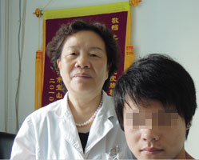
葛先生皮炎2年
南宁患者
-
葛先生今年22岁,家住南宁江南区,2年前,因皮肤局部发炎,他不经意地到药店买了些激素类药膏涂抹,当时曾经抹上就见效,但是后来多次发炎,再抹就不太好使了,而且是越抹越.......
【详细】
-
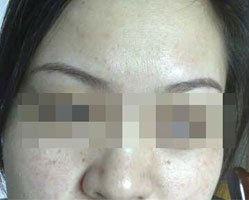
郭小姐皮炎5年
梧州患者
-
郭小姐,30岁,梧州人.发病初期,脸部泛发红丘疹,瘙痒难耐.2011年9月初,在梧州当地医院就诊,涂擦药膏后致使病情加重,丘疹连片形成大块红斑,渗出液积聚后结痂.于是.......
【详细】
-
-
高先生湿疹2年
南宁患者
-
南宁的高先生，臀部患有湿疹，2年了，一直很痒，红色丘疹刚开始一小片，后来两个臀部形成一大片。多次反复治疗，一直没彻底治好。"经常痒，抓得都是红红的，白天还......
【详细】
-
费先生湿疹2年
南宁患者
-
费先生是南宁一家私营企业的老板，事业发达，家庭幸福，惟有一件事让他不开心，那就是他得了一种六年不愈的湿疹病:浑身上下是红色的丘疹，溃破后流黄水.......
【详细】
-
小郑湿疹3年
南宁患者
-
前段时间跟朋友一块去吃海鲜，吃饭时并没有不适的感觉，但是回家之后，发现全身开始发红，并伴有瘙痒，郑先生以为是正常的瘙痒症，就没放在心上。没想到第二天醒来.......
【详细】
-
-
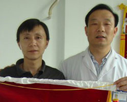
张先生荨麻疹3年
江西患者
-
张先生是江西余干人,现年38岁,多年前到广西省北海市工作生活,2007年不幸患上荨麻疹,三年多来到处求医,采用过各种方法,不但始终未愈,反而越治越重:头部和全身肿大......
【详细】
-
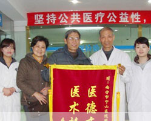
陈先生荨麻疹5年
江西患者
-
几年前患了慢性荨麻疹,几年以来反复纠缠,此病困扰了他和家人,大多都是疗法不当,靠激素祛疾,不但不见效,反而日益严重起来,以致基本丧失了行走能力. 不久前,他的女儿在网.......
【详细】
-
陈先生荨麻疹4年
伊拉克患者
-
有个很重要很重要的事情,就是 NO.1天来治疗的时候,早上治疗,下午他就感觉到比以前病情要好很多很多,很大很大,他很高兴,他说他肯定在这个医院他的病会走掉,具体不能.......
【详细】
-
-
小董鱼鳞病5年
北海患者
-
小董一家是广西北海的，父亲在南宁某单位打工，小董的父亲说，"孩子是从5岁发病的，10来岁的时候 严重，治疗过，都是吃中药，外用软膏擦一擦，没用的。"......
【详细】
-
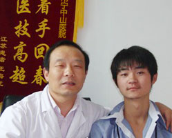
小林鱼鳞病2年
桂林患者
-
小林今年17岁,来自广西桂林,两年前得了鱼鳞病,在当地治疗无效后,通过网络了解到南宁中山医院皮肤科治疗这种病有"绝招",于是2010年9月在家人的陪同下前来就医.......
【详细】
-
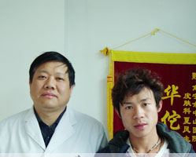
小李鱼鳞病4年
南宁患者
-
来自南宁的鱼鳞病患者小李,今年刚20岁,2010年12月初专程来到南宁中山医院皮肤科治疗.小李治疗14天,严重的病情已经得到了有效控制,"和正常的皮肤也差不多了.".......
【详细】
患者康复视频
The latest technology
-
视频加载中...
丁小姐青春痘康复记
-
-
丁小姐青春痘康复记
-
牛皮癣不是不治之症
-
脱发好了，笑容回来了
-
荨麻疹，再也不见！
-
湿疹没了，姑娘笑了
-
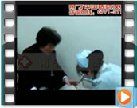
吴阿姨无痛治指甲过程
患者的认可
Patients approval
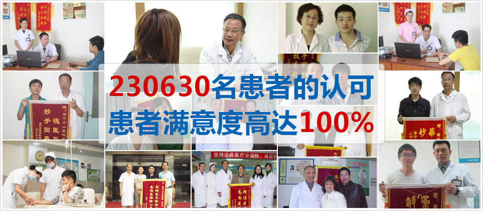
医院案例库
The hospital case library
-
-
我院建立起种类繁多的疾病资源库
涉及420余种常见皮肤病
汇聚230630例皮肤病案例
建立疾病资源库将有助于充分发掘和利用我院疾病资源的优势,建立并完善规模化、标准化、信息化和国际化的重大疾病资源收集和保存体系,为开展医学研究,药物开发与评价研究,疾病早期预警、早期预防、早期治疗的新技术和新方法以及个体化治疗研究提供战略性基础资源平台。
仪器设备
Instrument and equipment
- 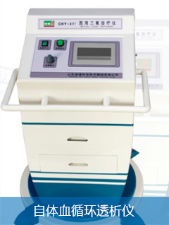
- 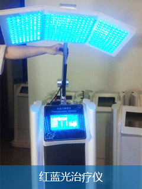
- 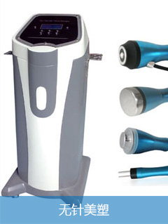
- 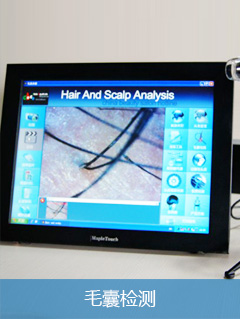
- 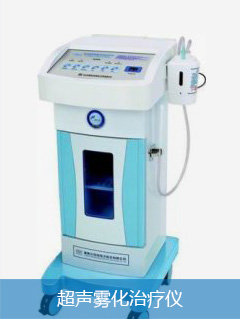
- 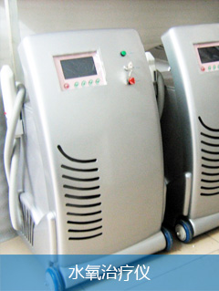
- 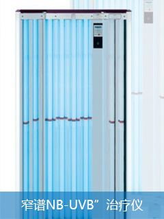
- 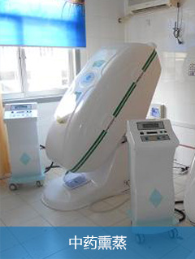
社会责任
Social responsibility
- 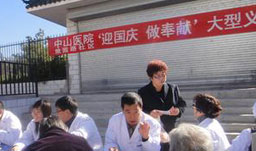
- 中山医院迎国庆大型义诊活动
- 南宁中山医疗救助情暖灾区
- 南宁中山医院"大篷车"进村义诊
- 南宁中山医院参加医疗救助'一站式服务'推进
- 我院'汶川医疗救助队'正在为灾区伤员输液护
- 我院专家和广西国际商会嘉宾参加指导工作
- 9月17日，南宁中山皮肤病医院"中西医治疗皮肤病成果展"及"向困难皮肤病患者提供专业医疗服务和援助基金"活动在位于南宁市国际会展中心启动。
- 由南宁中山医院承办，中国医师协会皮肤科医师培训中心、广西省医师协会、联合主办的"2013皮肤性病学术研讨会"于6月22、23日在南宁国际会展。
更多关注
More attention
患者留言板
Patients with message board
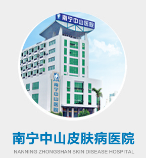
总评：
服务满意度：4.9
环境满意度：4.9
疗效满意度：5.0
我要评论